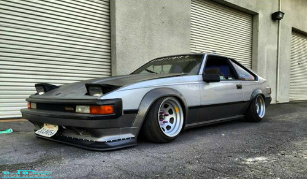
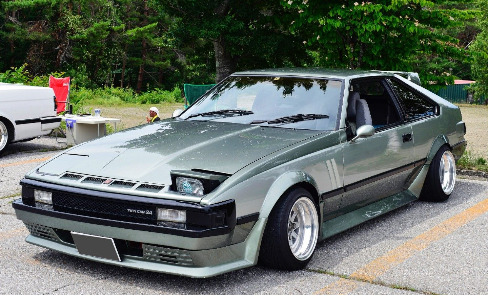

Toyota Supra
Second Gen Mk2 (A60)
Toyota Supra
Second Gen Mk2 (A60)
Benefiting from a redesign of the Celica, the Supra found itself lifted from the worst automotive trends of the Seventies and propelled into the squared-off futurism of the Eighties. With its chunky flares, pop-up headlights, and integrated hatch spoiler, the MkII Supra is pure Duran Duran.
Not only has this generation of Supra aged well in terms of design, but it also came with solid performance chops. Models equipped with the five-speed manual transmission initially produced 145 hp from their twin-cam, 2.8L straight-six, later bumped to 160hp for the 1984 model year.
The Supra won critical acclaim, with Car and Driver's David E. Davis declaring, “The new Supra is a nearly perfect car. The Porsche people must look at the Supra, then look at their own 924, and wonder if they're in the right business.” Apart from some complaints about the complexity of the stereo, with its seven equalizer sliders, Toyota had a hit on its hands.
1983 – MkII Supras began racing as a Division Three touring car, competing against the likes of BMW's 635CSi. They were considered a little underpowered, but did eke out a few wins. 1985 – Turbocharged racing rivals largely outperformed the Supra, but crowds came to see driver Barry Sheene, a world champion motorcycle racer. 1985 – Because of delays with the third-generation Supra, production of the MkII was held over for a year. 1986 model-year Supras are all the most desirable Performance types.